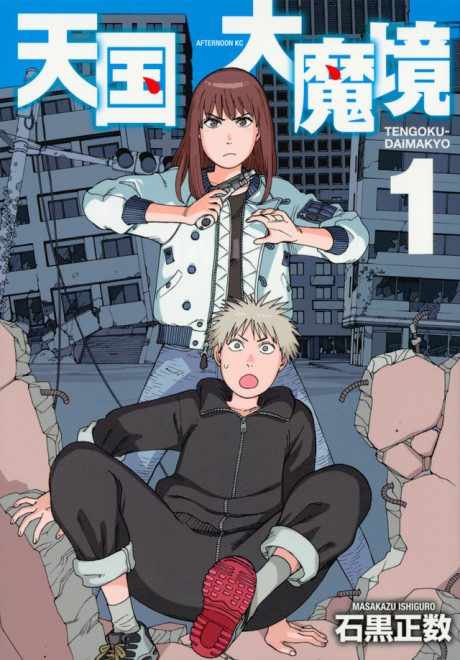

Anime
Anime
Manga2023 · Adventure, Mystery, Sci-Fi
Tengoku Daimakyo
天国大魔境
AniList8.1
Animeter—
Episodes13 ep
MangaCh. 40
Is it worth pushing through?
Built from what visitors report across all 13 episodes.
Loading reports…Checking what other people said about this one.
Sign in with your email at the top of the page to add your report.